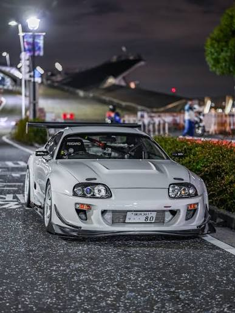

Visual
Sobre ele
O Toyota Supra MK4 (A80) foi lançado em 1993 como a quarta geração de um carro que já carregava uma herança formidável. Mas o A80 foi além — ele não apenas superou seus antecessores, ele redefiniu o que um carro esportivo japonês poderia ser.
Com linhas projetadas pelo designer Erwin Lui, o Supra Mk4 combinava aerodinâmica funcional com estética que ainda hoje, mais de 30 anos depois, impressiona qualquer entusiasta. É um carro que envelheceu como um clássico italiano — na contramão do tempo.

Sobre o Motor
Visual
Marcos Históricos